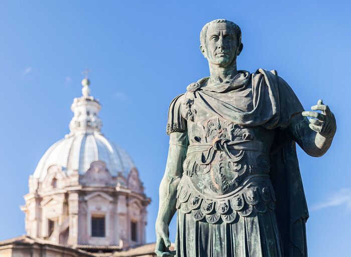

Julius Caesar
A Roman Political Mastermind

A bronze statue of Julius Caesar located within the Roman Forum along the Via dei Fori Imperiali. The first historical Roman to be officially deified, Julius Caesar embodies the highest essence of strength and authority.
A timeline of Julius Caesar's life:
- ~100 BC - Caesar is born into a political family. Notable members include his uncle Marius who was a famous general.
- 84 BC - Marries Cornelia, the daughter of L. Cornelius Cinna.
- 75 BC - Gets captured by Cicilian pirates at the age of 25. The pirates found Caesar to be incomprehensible as he simply did not behave like a captive and even negotiated his ransom up. After 38 days, Caesar was set free and raised a navy to capture his previous captors. When the pirates were detained, Julius entered the prison and ordered his men to crucify them all.
- 73 BC - Elected pontifex due to his charisma and leadership ability.
- 69 BC - Caesar's wife Cornelia dies but he remarries shortly after.
- 63 BC - Elected Pontifex Maximus
- 60 BC - Elected to the Consul at age 40 where he collaborated with Pompey the Great and Crassus.
- 58 BC - Conquered Germany and Helvetti after they threatened Gaul and France.
- 55 BC - Protected his ally, France, by crossing the Rhine and invading Britain.
- 53 BC - Crassus dies and a great quarrel begins between Caesar and Pompey.
- 49 BC - Goes to war against Pompey.
- 48 BC - Julius emerges victorious against Pompey, who dies in the end.
- 47 BC - Goes to war against Cleopatra of Egypt.
- 45 BC - Names himself Rome's dictator for life.
- 44 BC - Assassinated by political rivals on the Ides of March. Julius Caesar was known as a masterful tactician in politics and war. Caesar's brilliance shined so bright that it inevitably stirred great fear in his rivals and led to his downfall.
"On reflecting at dinner that he had done nothing to help anybody all day, he uttered these memorable and praiseworthy words: 'Friends, I have lost a day.''"
--Roman Historian Suetonius